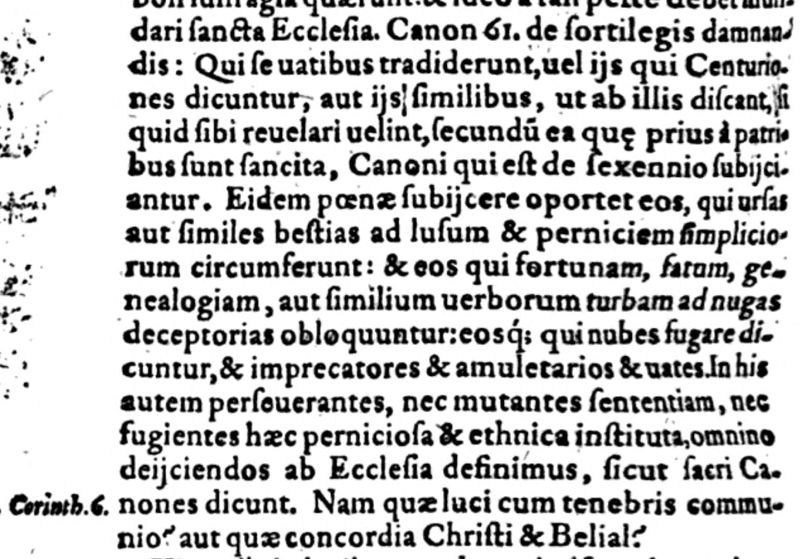
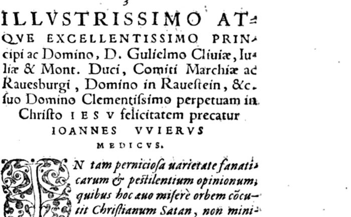

The canon against bear-leaders and fortune-tellers (Basel 1568, p. 578)
Latin: Basel 1568, the chapter on the penalties of “infamous magicians” (running head “De mag. infam. pœnis”), p. 578, scan n581.


Canon 61, on condemning sorcerers: Those who have given themselves over to soothsayers, or to those called “centurions”, or the like, to learn from them what they wish to have revealed, shall be subject, according to what the Fathers decreed earlier, to the canon of six years’ penance. The same penalty must be laid on those who lead about bears or similar beasts for the sport and ruin of simple folk, and on those who prate of fortune, fate, genealogy and a crowd of such words, to deceive with trifles; and on those called cloud-chasers, and the cursers, the amulet-makers and the diviners. Those who persist in these things, and do not change their minds or flee these pernicious and heathen practices, we decree are to be cast out of the Church altogether, as the sacred canons say. For what communion has light with darkness? or what concord has Christ with Belial?
Original Latin
Canon 61. de sortilegis damnandis: Qui se uatibus tradiderunt, uel ijs qui Centuriones dicuntur, aut ijs similibus, ut ab illis discant, si quid sibi reuelari uelint, secundum ea quæ prius à patribus sunt sancita, Canoni qui est de sexennio subijciantur. Eidem pœnæ subijcere oportet eos, qui ursas aut similes bestias ad lusum & perniciem simpliciorum circumferunt: & eos qui fortunam, fatum, genealogiam, aut similium uerborum turbam ad nugas deceptorias obloquuntur: eosque qui nubes fugare dicuntur, & imprecatores & amuletarios & uates. In his autem perseuerantes, nec mutantes sententiam, nec fugientes hæc perniciosa & ethnica instituta, omnino deijciendos ab Ecclesia definimus, sicut sacri Canones dicunt. Nam quæ luci cum tenebris communio? aut quæ concordia Christi & Belial?
| Wier (1568, p. 578) | Lecky (ch. I, note 74) |
|---|---|
| qui ursas aut similes bestias | qui ursas aut similes bestias |
| ad lusum & perniciem simpliciorum | ad ludum et perniciem simplicium |
| circumferunt | circumferunt |
Lecky’s ch. I note 74: “Dancing bears and other intelligent animals seem to have been also connected with the Devil; and an old council anathematised at once magicians who have abandoned their Creator, fortune-tellers, and those ‘qui ursas aut similes bestias ad ludum et perniciem simplicium circumferunt’ — ‘for what fellowship can there be between Christ and Belial.’ (Wier, de Præst. Dæm. p. 557.)” Wier heads it only “Canon 61”; it is canon 61 of the Council in Trullo (Constantinople, 692), quoted in a Latin version. Lecky’s two variants (“ludum”, “simplicium”) mean the same; whether they come from his edition of Wier or from his memory is not settled, since his edition has not been found. The words “magicians who have abandoned their Creator” paraphrase the sentence just before the canon on the same page (“qui relicto creatore suo, diaboli suffragia quærunt”, “who, abandoning their Creator, seek the Devil’s help”).
Further down the rabbit hole
Sources that Lecky cites in the notes next to the ones that cite this page.
- Bodin, Démonomanie des SorciersThe great lawyer who wrote the witch-hunters’ handbook
- Dalyell, The Darker Superstitions of ScotlandThe tortures of the Scottish witch-trials
- Thiers, Traité des SuperstitionsThree papal bulls but no rebellion
- Binsfeld, Tractatus de confessionibus maleficorum et sagarumThe suffragan bishop of Trier on why witches float, and why women fall
- Garinet, Histoire de la Magie en FranceA history of magic in France, from the Frankish kings to the author’s own day
- Hecker, The Epidemics of the Middle AgesThe dancers’ dislike of pointed shoes, misplaced


Backlinks
Every place in Rationalism in Europe that links to this page (generated automatically when the site is built).
- Chapter I: note 74